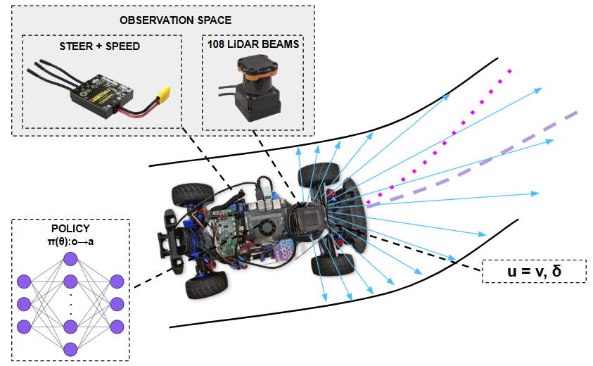

1
Learn to Drive
FAST!
Train a policy from scratch, then with Stable-Baselines3, until the car laps without crashing.
- MDP formulation & reward basics
- PPO from scratch: actor-critic, GAE
- Practical training with SB3
Hands-on RL: From Sim to Real Autonomous Racing
From a car that can barely stay on track to one that beats the field, each module builds on the last.
Train a policy from scratch, then with Stable-Baselines3, until the car laps without crashing.
Shape the reward for speed and smoothness, then deploy the policy on the real car.
Race against opponents: combine RL with planning and control to overtake and win.
This course introduces reinforcement learning (RL) as a practical framework for autonomous racing on the Roboracer platform, treating learned policies as a principled extension of classical planning and control rather than a replacement for them. We frame perception, planning, and control as a single closed-loop decision problem in which a parametric policy maps raw LiDAR scans and odometry directly to steering and speed commands, while vehicle dynamics, actuator limits, and track geometry enter as explicit domain priors. Content is organized into three progressive modules — Learn to Drive, Learn to Race, and Learn to Win — each shipped as a recorded lecture, a slide deck, and one or more hands-on Colab notebooks, so participants build a policy from scratch, shape it into a competitive racer, and see where RL fits alongside classical planning and control. Emphasis throughout is on reward design, domain randomization, and safety filtering, so that learned policies remain data-efficient, robust, and deployable on the physical car at the limits of handling.

Here, \( {\color{#8BC34A}{\xi}} \) denotes the sampled track layout, vehicle parameters, and opponent scenarios, \( {\color{#E57373}{r}} \) defines a domain-aware reward combining lap time, track progress, and collision penalties, \( {\color{#64B5F6}{f}} \) and \( {\color{#64B5F6}{c}} \) encode the vehicle dynamics and the safety and actuation constraints, and \( {\color{#B39DDB}{\pi_\theta}} \) represents the learned policy mapping observations to steering angle and speed commands.
Every module ships as a recorded lecture, a slide deck, and one or more Colab notebooks you run end to end in the browser, no local install or GPU required. Here is what to expect from each module.
Start with the recorded lecture for the module. It builds the intuition — why the reward is shaped the way it is, why the observation looks the way it does — before you see a single line of code.
Skim the slide deck for the formal treatment: the MDP formulation, the network architecture, and the exact PPO update rule used in the notebook.
Open the module's Colab notebook and run every cell top to bottom. No ROS installation and no prior RL experience required — each notebook explains every concept as it introduces it, and trains a policy in well under an hour on a free Colab GPU.
From Module 2 onward, take the policy you trained in simulation and run it for real, as a ROS 2 node on the physical Roboracer car.
Each module's lecture is recorded and posted here on YouTube.
Tutorial slides and coding examples in Google Colab are available below.
Instructor
Professor, Electrical and Systems Engineering
University of Pennsylvania
Teaching Assistant
Robotics
University of Pennsylvania
Teaching Assistant
Mechanical Engineering and Applied Mechanics
University of Pennsylvania
Teaching Assistant
Robotics
University of Pennsylvania
Teaching Assistant
Robotics
University of Pennsylvania
Participants can run all examples directly in Google Colab. For local execution, clone the repository and install the Python dependencies below.
git clone https://github.com/dhyeyshah28/RL_for_Roboracer.git
cd RL_for_Roboracer
python -m venv .venv
source .venv/bin/activate # Windows: .venv\Scripts\activate
pip install -r requirements.txtDeployment on the physical vehicle additionally requires ROS 2 and the Roboracer system stack on the onboard computer.